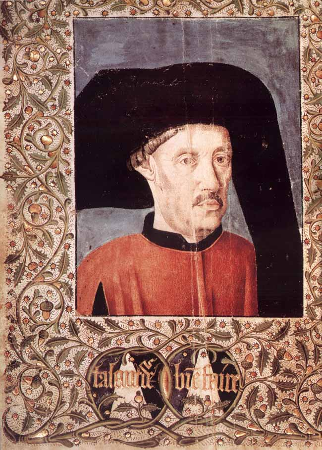

Верно то, что в году сороковом снаряжены были две каравеллы с намерением отправиться в ту землю, однако вследствие того, что произошли противные [сему] события (aquecimentos), мы не рассказываем более об их путешествии.
(Цит. выше ист.)
В истории всегда чудесны те мгновения, когда гений отдельного человека вступает в союз с гением эпохи, когда один человек проникается творческим устремлением своего времени. Среди стран Европы была одна, которой еще не удалось выполнить свою часть общеевропейской задачи - Португалия, в долгой героической борьбе освободившаяся от владычества мавров. Но теперь, когда добытые оружием победа и самостоятельность закреплены, молодой, полный сил народ пребывает в вынужденном бездействии. Естественное стремление к экспансии, присущее каждому успешно развивающемуся народу, пока еще не находит выхода. Все сухопутные границы Португалии соприкасаются с Испанией, дружественным, братским королевством, следовательно для маленькой бедной страны возможна только экспансия на море, посредством торговли и колонизации. На беду, географическое положение Португалии по сравнению со всеми другими мореходными нациями Европы является - или кажется в те времена - наименее благоприятным. Ибо Атлантический океан, чьи несущиеся с запада волны разбиваются о португальское побережье, слыл, согласно географии Птолемея (единственного авторитета средних веков), беспредельной, недоступной для мореплавания водной пустыней. Столь же недоступным изображается в Птолемеевых описаниях Земли и южный путь - вдоль африканского побережья: невозможным считалось обогнуть морем эту песчаную пустыню, дикую, необитаемую страну, якобы простирающуюся до антарктического полюса и не отделенную ни единым проливом от terra australis. По мнению старинных географов, из всех европейских стран, занимающихся мореплаванием, Португалия, не расположенная на берегу единственного судоходного моря - Средиземного, находилась в наиболее невыгодном положении.
И вот жизненной задачей одного португальского принца становится это мнимо невозможное превратить в возможное, отважно попытаться, согласно евангельскому изречению, последних сделать первыми. Что, если Птолемей, этот geographus maximus, этот непогрешимый авторитет землеведения, ошибся? Что, если этот океан, могучие западные волны которого нередко выбрасывают на португальский берег обломки диковинных, неизвестных деревьев (а ведь где-нибудь они да росли), вовсе не бесконечен? Что, если он ведет к новым, неведомым странам? Что, если Африка обитаема и по ту сторону тропиков? Что, если премудрый грек попросту заврался, утверждая, будто этот неисследованный материк нельзя обогнуть, будто через океан нет пути в индийские моря? Ведь тогда Португалия, лежащая западнее других стран Европы, стала бы подлинным трамплином всех открытий и через Португалию прошел бы ближайший путь в Индию. Тогда бы Португалия не была больше заперта океаном, а напротив, больше других стран Европы призвана к мореходству. Эта мечта сделать маленькую, бессильную Португалию великой морской державой и Атлантический океан, слывший доселе неодолимой преградой, превратить в водный путь стала in nuce (в зародыше) целью всей жизни iffante Энрике, заслуженно и в то же время незаслуженно именуемого в истории Генрихом Мореплавателем, Незаслуженно, ибо, если не считать непродолжительного морского похода в Сеуту, Энрике ни разу не ступал на корабль, не написал ни одной книги о мореходстве, ни одного навигационного трактата, не начертил ни единой карты. И все же история по праву присвоила ему это имя, ибо только мореплаванию и мореходам отдал этот португальский принц всю свою жизнь и все свои богатства. Уже в юные годы отличившийся при осаде Сеуты (1412), один из самых богатых людей в стране, этот сын португальского и племянник английского короля мог удовлетворить свое честолюбие, занимая самые блистательные должности; европейские дворы наперебой зовут его к себе. Англия предлагает ему пост главнокомандующего. Но этот странный мечтатель всему предпочитает плодотворное одиночество. Он удаляется на мыс Сагриш, некогда священный (sacrum) мыс древнего мира, и там в течение без малого пятидесяти лет подготовляет морскую экспедицию в Индию и тем самым - великое наступление на Mare incognitum.
Что дало одинокому и дерзновенному мечтателю смелость наперекор величайшим космографическим авторитетам того времени, наперекор Птолемею и его продолжателям и последователям защищать утверждение, что Африка отнюдь не примерзший к полюсу материк, что обогнуть ее возможно и что там-то и пролегает искомый морской путь в Индию? Эта тайна вряд ли когда-нибудь будет раскрыта. Правда, в ту пору еще не заглохло (упоминаемое Геродотом и Страбоном) предание, будто в покрытые мраком дни фараонов финикийский флот, выйдя в Красное море, два года спустя, ко всеобщему изумлению, вернулся на родину через Геркулесовы столбы (Гибралтарский пролив). Быть может, инфант слыхал от работорговцев-мавров, что по ту сторону Libya deserta - западной Сахары - лежит "страна изобилия" - bilat ghana, и правда, на карту, составленную в 1150 году космографом арабом для норманского короля Роджера II, под названием bilat ghana совершенно правильно нанесена нынешняя Гвинея. Итак, возможно, что Энрике, благодаря опытным разведчикам, лучше был осведомлен о подлинных очертаниях Африки, нежели ученые-географы, непреложной истиной считавшие только сочинения Птолемея и в конце концов объявившие пустым вымыслом описания Марко Поло и Ибн-Батуты. Но подлинно высокое значение инфанта Энрике в том, что одновременно с величием цели он осознал и трудность ее достижения; благородное смирение заставило его понять, что сам он не увидит, как сбудется его мечта, ибо срок больший, чем человеческая жизнь, потребуется для подготовки такого гигантского предприятия. Как было отважиться в те времена на плавание из Португалии в Индию без знания океана, без хорошо оснащенных кораблей? Ведь невообразимо примитивны были в эпоху, когда Энрике приступил к осуществлению своего замысла, познания европейцев в географии и мореходстве. В страшные столетия духовного мрака, наступившие вслед за падением Римской империи, люди средневековья почти полностью перезабыли все, что финикийцы, римляне, греки узнали во время своих смелых странствий; неправдоподобным вымыслом казалось в ту эпоху пространственного самоограничения, что некий Александр достиг границ Афганистана, пробрался в самое сердце Индии; утеряны были превосходные карты и географические описания римлян, в запустение пришли их военные дороги, исчезли верстовые камни, отмечавшие пути вглубь Британии и Вифинии, не осталось следа от образцового римского систематизирования политических и географических сведений; люди разучились странствовать, страсть к открытиям угасла, в упадок пришло искусство кораблевождения. Не ведая далеких дерзновенных целей, без верных компасов, без правильных карт опасливо пробираются вдоль берегов, от гавани к гавани, утлые суденышки, в вечном страхе перед бурями и грозными пиратами. При таком упадке космографии,, со столь жалкими кораблями еще не время было усмирять океаны, покорять заморские царства. Долгие годы самоотвержения потребуются на то, чтобы наверстать упущенное за столетия долгой спячки. И Энрике - в этом его величие - решился посвятить свою жизнь грядущему подвигу.
Лишь несколько полуразвалившихся стен сохранилось от замка, воздвигнутого на мысе Сагриш инфантом Энрике и впоследствии разграбленного и разрушенного неблагодарным наследником его познаний Фрэнсисом Дрейком. В наши дни, сквозь пелену и туманы легенд, почти невозможно с точностью установить, каким образом инфант Энрике разрабатывал свои планы завоевания мира Португалией. Согласно, быть может, романтизирующим сообщениям португальских хроник, он велел доставить себе книги и атласы со всех частей света, призвал арабских и еврейских ученых и поручил им изготовление более точных навигационных приборов и таблиц. Каждого моряка, каждого капитана, возвратившегося из плавания, он зазывал к себе и подробно расспрашивал. Все эти сведения тщательно хранились в секретном архиве, и в то же время он снаряжал целый ряд экспедиций. Неустанно содействовал инфант Энрике развитию кораблестроения; за несколько лет прежние barcas - небольшие открытые рыбачьи лодки, команда которых состоит из восемнадцати человек - превращаются в настоящие naos - устойчивые корабли, водоизмещением в восемьдесят, даже сто тонн, способные и в бурную погоду плавать в открытом море. Этот новый, годный для дальнего плавания тип корабля обусловил и возникновение нового типа моряков. На помощь кормчему является "мастер астрологии" - специалист по навигационному делу, умеющий разбираться в портуланах, определять девиацию компаса, отмечать на карте меридианы. Теория и практика творчески сливаются воедино, и постепенно в этих экспедициях из простых рыбаков и матросов вырастает новое племя мореходов и исследователей, дела которых довершатся в грядущем. Как Филипп Македонский оставил в наследство сыну Александру непобедимую фалангу для завоевания мира, так Энрике для завоевания океана оставляет своей Португалии наиболее совершенно оборудованные суда своего времени и превосходнейших моряков.
Но трагедия предтеч в том, что они умирают у порога обетованной земли, не увидев ее собственными глазами. Энрике не дожил ни до одного из великих открытий, обессмертивших его отечество в истории познания вселенной. Ко времени его кончины (1460) вовне, в географическом пространстве, еще не достигнуты хоть сколько-нибудь ощутимые успехи. Прославленное открытие Азорских островов и Мадейры было в сущности всего только нахождением их вновь (уже в 1351 году они были отмечены в Лаврентийской портулане). Продвигаясь вдоль западного берега Африки, корабли инфанта не достигли даже экватора; завязалась только малозначительная и не особенно похвальная торговля белой и по преимуществу "черной" слоновой костью - иными словами, на сенегальском побережье массами похищают негров, чтобы затем продать их на невольничьем рынке в Лиссабоне, да еще находят кое-где немного золотого песку; этот жалкий, не слишком славный почин - все, что довелось увидеть Энрике от своего заветного дела. Но в действительности решающий успех уже достигнут. Ибо не в обширности пройденного пространства заключалась первая победа португальских мореходов, а в том, что было ими свершено в духовной сфере: в развитии предприимчивости, в уничтожении зловредного поверья. В течение многих веков моряки боязливо сообщали друг другу, будто за мысом "Нан" (что означает мыс "Дальше пути нет") судоходство невозможно. За ним сразу начинается "зеленое море мрака", и горе кораблю, который осмелится проникнуть в эти роковые воды. От солнечного зноя в тех краях море кипит и клокочет. Обшивка корабля и паруса загораются; всякий христианин, дерзнувший проникнуть в это "царство сатаны", пустынное, как земля вокруг горловины вулкана, тотчас же превращается в негра. Такой непреодолимый ужас перед плаванием в южных морях породили эти россказни, что папе, дабы хоть как-нибудь доставить инфанту моряков, пришлось обещать каждому участнику экспедиций полное отпущение грехов; только после этого удалось завербовать нескольких смельчаков, согласных отправиться в неведомые края. И как же ликовали португальцы, когда Жил Эанниш в 1434 году обогнул дотоле слывший неодолимым мыс Нан и уже из Гвинеи сообщил, что достославный Птолемей оказался отменным вралем, "...ибо плыть под парусами здесь так же легко, как и у нас дома, а страна эта богата и всего в ней в изобилии". Теперь дело сдвинулось с мертвой точки; Португалии уже не приходится с великим трудом разыскивать моряков - со всех сторон являются искатели приключений, люди, готовые на все. С каждым новым, благополучно завершенным путешествием отвага мореходов растет, и вдруг налицо оказывается целое поколение молодых людей, ценящих приключения превыше жизни. "Navigare necesse est, vivere non est necesse" - эта древняя матросская поговорка вновь обретает власть над человеческими душами. А когда новое поколение сплоченно и решительно приступает к делу - мир меняет свой облик.
Стефан Цвейг МАГЕЛЛАН (Человек и его деяние)